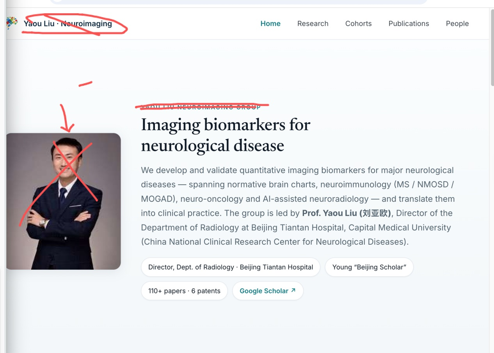
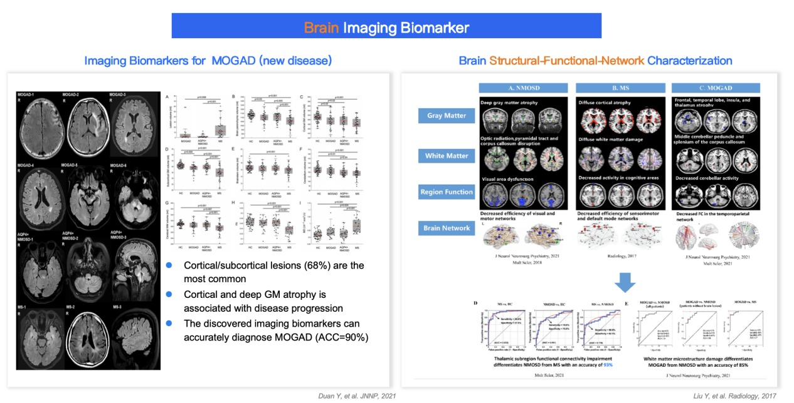
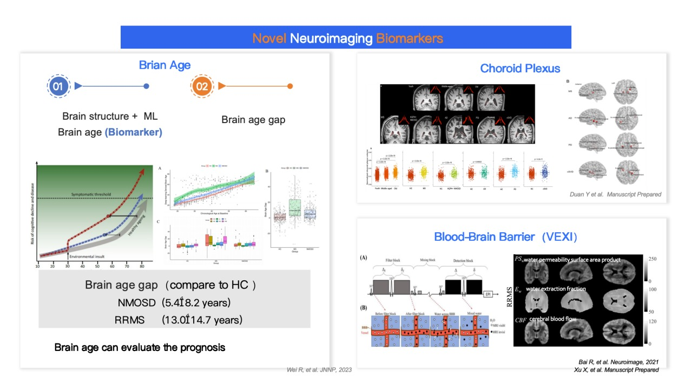
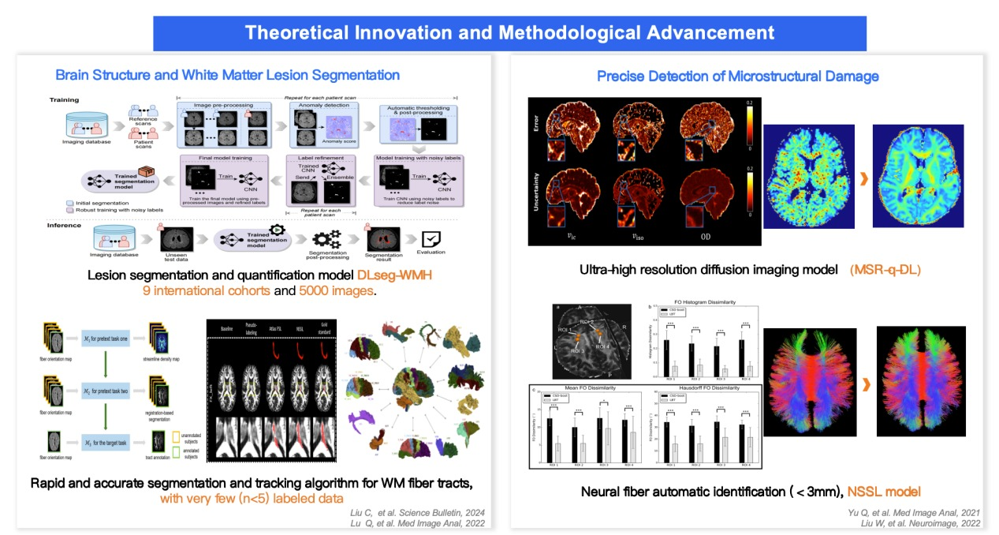
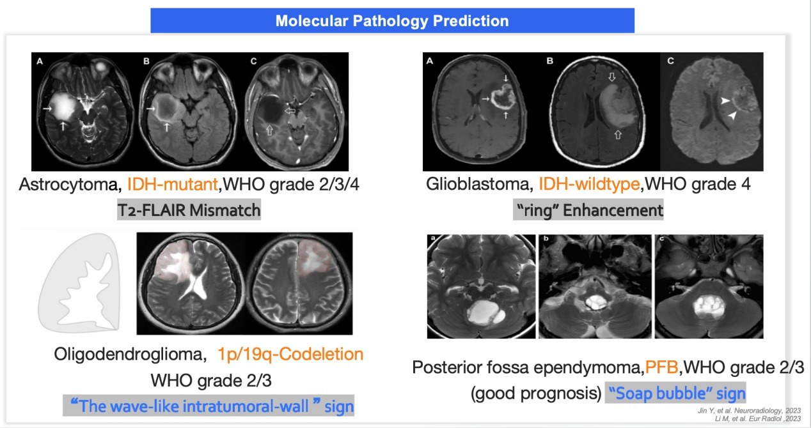
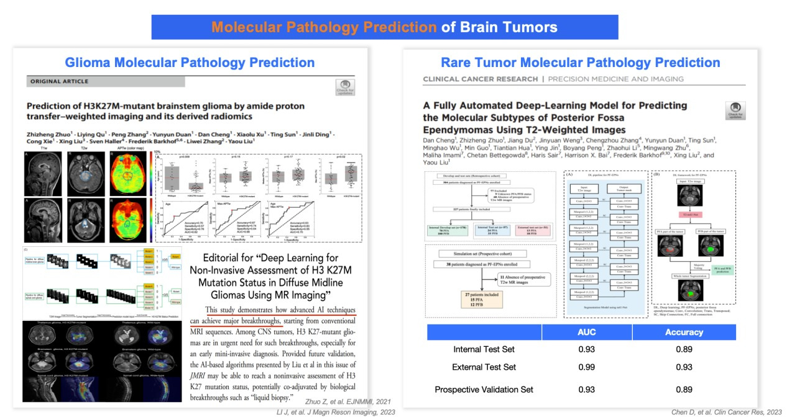
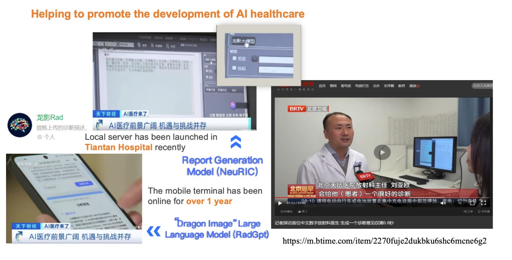

Population brain charts in Nature Neuroscience
“Charting brain morphology in international healthy and neurological populations” establishes lifespan structural-MRI references (with Prof. Xi-Nian Zuo). Read →
We develop and validate quantitative imaging biomarkers for major neurological diseases — spanning normative brain charts, neuroimmunology (MS / NMOSD / MOGAD), neuro-oncology and AI-assisted neuroradiology — and translate them into clinical practice. The group, in the Department of Radiology at Beijing Tiantan Hospital, Capital Medical University (China National Clinical Research Center for Neurological Diseases), is led by Prof. Yaou Liu (刘亚欧).

Journey Group · Department of Radiology, Beijing Tiantan Hospital
“Charting brain morphology in international healthy and neurological populations” establishes lifespan structural-MRI references (with Prof. Xi-Nian Zuo). Read →
Distinct virtual-histology signatures of cortical atrophy distinguish neuroinflammatory disease groups.
A Chinese medical-imaging diagnostic large language model and the “小君 (Xiaojun)” digital-radiologist application, co-developed with the Beijing Institute of Technology.
A multicentre prospective study differentiating subtypes and predicting survival from MRI. Read →
Among 20+ honors in neuroimaging; also Young “Beijing Scholar” and a Young Leading Talent of the national “Ten-Thousand-Talents” programme.
Committee member, Pan-Asian Committee for Treatment and Research in Multiple Sclerosis (PACTRIMS).
Imaging biomarkers across neuroimmunology, neuro-oncology, normative brain charts and AI neuroradiology.

Brain & spinal-cord structural–functional–network biomarkers for neuroimmunological disease.

Brain age, choroid-plexus and blood–brain-barrier (VEXI) markers of disease.

White-matter lesion & fiber-tract segmentation; precise microstructural-damage detection.

Imaging signs predicting glioma molecular subtypes (IDH, 1p/19q, grade).

Deep-learning molecular-pathology prediction for common and rare brain tumors.

The “龙影 / RadGPT” diagnostic model and “小君” digital-radiologist application.